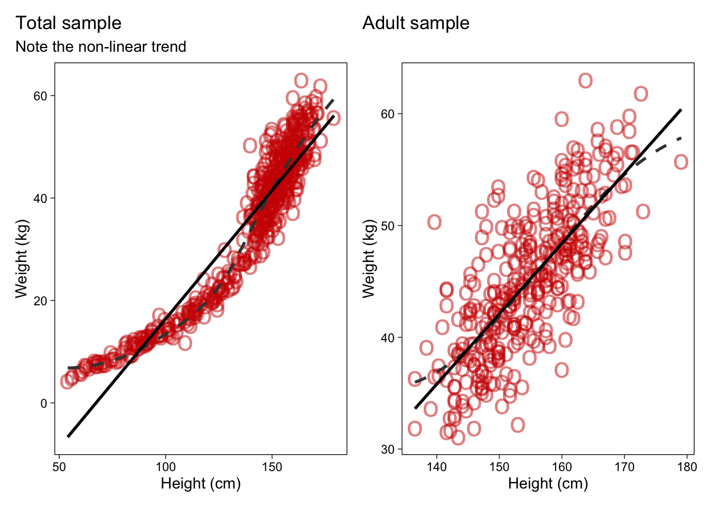
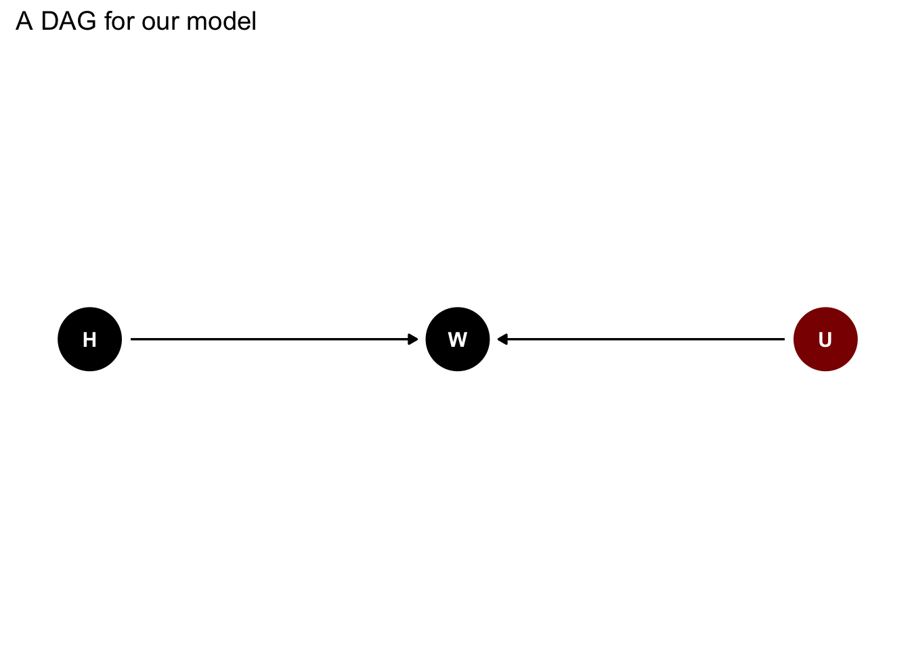
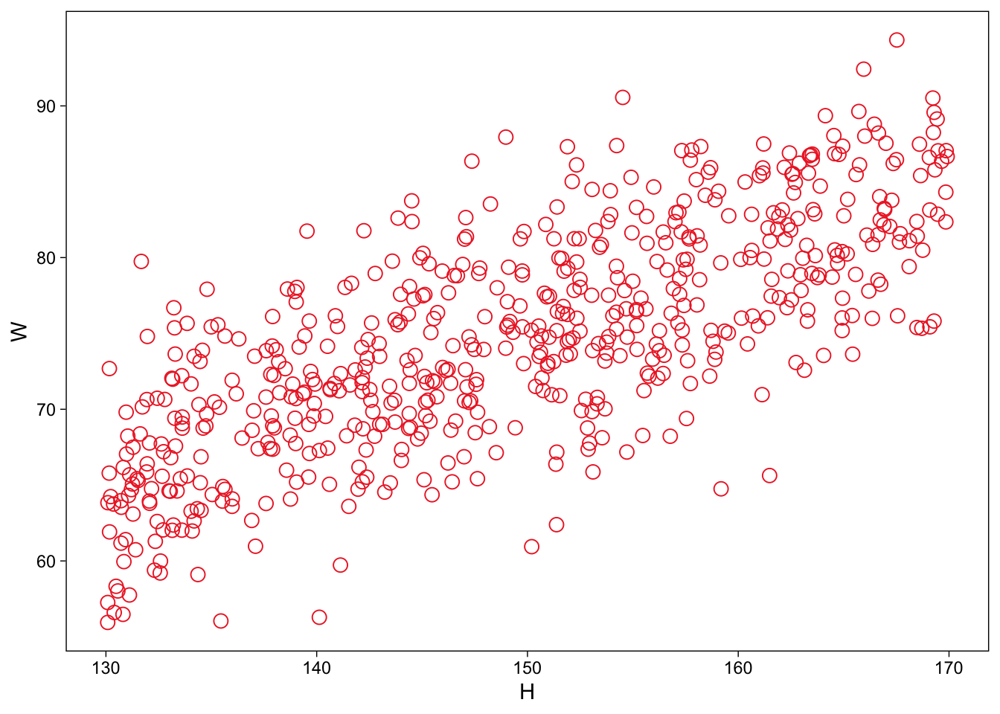
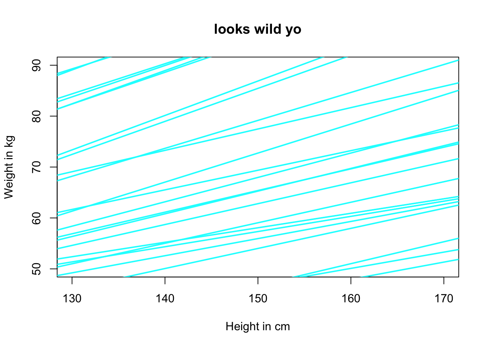
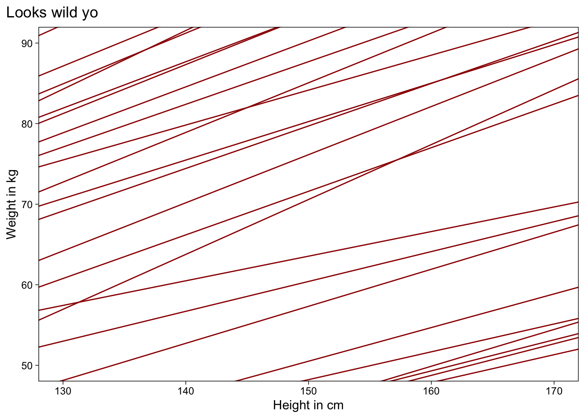

Code
library(rethinking)
library(tidyverse)
library(ggdag)
library(brms)
library(patchwork)
options(brms.backend = "cmdstanr")
theme_set(
theme_linedraw() +
theme(panel.grid = element_blank(),
plot.title.position = "plot"
))library(rethinking)
library(tidyverse)
library(ggdag)
library(brms)
library(patchwork)
options(brms.backend = "cmdstanr")
theme_set(
theme_linedraw() +
theme(panel.grid = element_blank(),
plot.title.position = "plot"
))Geocentric: Describes associations, makes predicitons, but is almost always mechanistically wrong
Gaussian: Normal yes, abstracts away from generative error models, super general
Generative: Sums fluctuations
Inferential: Maximal entropy for estimation of mean and variance
A variable does not need to be normal to be used in a Gaussian model, it is just a machine for estimating the mean and variance
data("Howell1")
p1 <-
Howell1 |>
ggplot(aes(x = height, y = weight)) +
geom_point(shape = "o", size = 7, col = "red3", alpha = .5) +
geom_smooth(method = "loess", se = F, col = "grey25", lty = "dashed") +
geom_smooth(method = "lm", se = F, col = "black") +
labs(
x = "Height (cm)",
y = "Weight (kg)",
title = "Total sample",
subtitle = "Note the non-linear trend"
)
d <- Howell1 |>
filter(age >= 18)
p2 <-
d |>
ggplot(aes(x = height, y = weight)) +
geom_point(shape = "o", size = 7, col = "red3", alpha = .5) +
geom_smooth(method = "loess", se = F, col = "grey25", lty = "dashed") +
geom_smooth(method = "lm", se = F, col = "black") +
labs(
x = "Height (cm)",
y = "Weight (kg)",
title = "Adult sample")
p1 + p2
Our question is:
How does height influence weight?
We believe that height effects weight \[ H \rightarrow W \tag{Our DAG} \]
\[ W = f(H) \tag {Our Function} \]
Of course there could also be unobserved things influencing the outcome
coord <- list(
x = c(W = 2, H = 1, U = 3),
y = c(W = 0, H = 0, U = 0)
)
dagify(W ~ H,
W ~ U,
exposure = "H",
outcome = "W",
latent = "U",
coords = coord) |>
tidy_dagitty() |>
mutate(colour = ifelse(name == "U", "Unobserved", "Observed")) |>
ggplot(aes(x = x, y = y, xend = xend, yend = yend)) +
geom_dag_point(aes(colour = colour)) +
geom_dag_edges() +
geom_dag_text() +
scale_color_manual(values = c("black", "darkred")) +
labs(title = "A DAG for our model") +
theme_dag() +
theme(legend.position = "none")
\[ W = \beta H + U \tag{Generative Model} \] Generative code:
# write function
sim_h <- function(H,b, sd){
U <- rnorm(length(H), mean = 0, sd)
W <- b*H + U
return(W)
}
# plot
d_sim <-
tibble(
H = runif(600, min = 130, max = 170),
W = sim_h(H,.5,5)
)
d_sim |>
ggplot(aes(H,W)) +
geom_point(
shape = 1,
size = 3,
col = "firebrick2"
)
List the variable and define each variable as a deterministic or distributional function of other variables
\[ W_i = \beta H + U_i \tag {Eq for expected Weight} \]
\[ U_i \sim Normal(0,\sigma) \]
\[ H_i \sim Uniform(130,70) \] ## Estimator
\[ E(W_i|H_i)= \alpha + \beta H_i \]
\[ Pr(\alpha,\beta,\sigma|H_i,W_i) = \frac{Pr(W_i|H_i\alpha,\beta,\sigma)Pr(\alpha,\beta,\sigma)}{Z} \]
\[ W_i \sim Normal (\mu_i,\sigma) \]
\[ \mu_i = \alpha + \beta H_i \]
m3.1 <-
quap(
alist(
W ~ dnorm(mu,sigma),
mu <- alpha + beta * H,
alpha ~ dnorm(0,10),
beta ~ dunif(0,1),
sigma ~ dunif(0,10)
), data = d_sim)
b3.1 <-
brm(
family = gaussian(),
data = d_sim,
W ~ H
)
SAMPLING FOR MODEL 'anon_model' NOW (CHAIN 1).
Chain 1:
Chain 1: Gradient evaluation took 1.3e-05 seconds
Chain 1: 1000 transitions using 10 leapfrog steps per transition would take 0.13 seconds.
Chain 1: Adjust your expectations accordingly!
Chain 1:
Chain 1:
Chain 1: Iteration: 1 / 2000 [ 0%] (Warmup)
Chain 1: Iteration: 200 / 2000 [ 10%] (Warmup)
Chain 1: Iteration: 400 / 2000 [ 20%] (Warmup)
Chain 1: Iteration: 600 / 2000 [ 30%] (Warmup)
Chain 1: Iteration: 800 / 2000 [ 40%] (Warmup)
Chain 1: Iteration: 1000 / 2000 [ 50%] (Warmup)
Chain 1: Iteration: 1001 / 2000 [ 50%] (Sampling)
Chain 1: Iteration: 1200 / 2000 [ 60%] (Sampling)
Chain 1: Iteration: 1400 / 2000 [ 70%] (Sampling)
Chain 1: Iteration: 1600 / 2000 [ 80%] (Sampling)
Chain 1: Iteration: 1800 / 2000 [ 90%] (Sampling)
Chain 1: Iteration: 2000 / 2000 [100%] (Sampling)
Chain 1:
Chain 1: Elapsed Time: 0.016 seconds (Warm-up)
Chain 1: 0.01 seconds (Sampling)
Chain 1: 0.026 seconds (Total)
Chain 1:
SAMPLING FOR MODEL 'anon_model' NOW (CHAIN 2).
Chain 2:
Chain 2: Gradient evaluation took 1e-06 seconds
Chain 2: 1000 transitions using 10 leapfrog steps per transition would take 0.01 seconds.
Chain 2: Adjust your expectations accordingly!
Chain 2:
Chain 2:
Chain 2: Iteration: 1 / 2000 [ 0%] (Warmup)
Chain 2: Iteration: 200 / 2000 [ 10%] (Warmup)
Chain 2: Iteration: 400 / 2000 [ 20%] (Warmup)
Chain 2: Iteration: 600 / 2000 [ 30%] (Warmup)
Chain 2: Iteration: 800 / 2000 [ 40%] (Warmup)
Chain 2: Iteration: 1000 / 2000 [ 50%] (Warmup)
Chain 2: Iteration: 1001 / 2000 [ 50%] (Sampling)
Chain 2: Iteration: 1200 / 2000 [ 60%] (Sampling)
Chain 2: Iteration: 1400 / 2000 [ 70%] (Sampling)
Chain 2: Iteration: 1600 / 2000 [ 80%] (Sampling)
Chain 2: Iteration: 1800 / 2000 [ 90%] (Sampling)
Chain 2: Iteration: 2000 / 2000 [100%] (Sampling)
Chain 2:
Chain 2: Elapsed Time: 0.012 seconds (Warm-up)
Chain 2: 0.01 seconds (Sampling)
Chain 2: 0.022 seconds (Total)
Chain 2:
SAMPLING FOR MODEL 'anon_model' NOW (CHAIN 3).
Chain 3:
Chain 3: Gradient evaluation took 1e-06 seconds
Chain 3: 1000 transitions using 10 leapfrog steps per transition would take 0.01 seconds.
Chain 3: Adjust your expectations accordingly!
Chain 3:
Chain 3:
Chain 3: Iteration: 1 / 2000 [ 0%] (Warmup)
Chain 3: Iteration: 200 / 2000 [ 10%] (Warmup)
Chain 3: Iteration: 400 / 2000 [ 20%] (Warmup)
Chain 3: Iteration: 600 / 2000 [ 30%] (Warmup)
Chain 3: Iteration: 800 / 2000 [ 40%] (Warmup)
Chain 3: Iteration: 1000 / 2000 [ 50%] (Warmup)
Chain 3: Iteration: 1001 / 2000 [ 50%] (Sampling)
Chain 3: Iteration: 1200 / 2000 [ 60%] (Sampling)
Chain 3: Iteration: 1400 / 2000 [ 70%] (Sampling)
Chain 3: Iteration: 1600 / 2000 [ 80%] (Sampling)
Chain 3: Iteration: 1800 / 2000 [ 90%] (Sampling)
Chain 3: Iteration: 2000 / 2000 [100%] (Sampling)
Chain 3:
Chain 3: Elapsed Time: 0.012 seconds (Warm-up)
Chain 3: 0.01 seconds (Sampling)
Chain 3: 0.022 seconds (Total)
Chain 3:
SAMPLING FOR MODEL 'anon_model' NOW (CHAIN 4).
Chain 4:
Chain 4: Gradient evaluation took 1e-06 seconds
Chain 4: 1000 transitions using 10 leapfrog steps per transition would take 0.01 seconds.
Chain 4: Adjust your expectations accordingly!
Chain 4:
Chain 4:
Chain 4: Iteration: 1 / 2000 [ 0%] (Warmup)
Chain 4: Iteration: 200 / 2000 [ 10%] (Warmup)
Chain 4: Iteration: 400 / 2000 [ 20%] (Warmup)
Chain 4: Iteration: 600 / 2000 [ 30%] (Warmup)
Chain 4: Iteration: 800 / 2000 [ 40%] (Warmup)
Chain 4: Iteration: 1000 / 2000 [ 50%] (Warmup)
Chain 4: Iteration: 1001 / 2000 [ 50%] (Sampling)
Chain 4: Iteration: 1200 / 2000 [ 60%] (Sampling)
Chain 4: Iteration: 1400 / 2000 [ 70%] (Sampling)
Chain 4: Iteration: 1600 / 2000 [ 80%] (Sampling)
Chain 4: Iteration: 1800 / 2000 [ 90%] (Sampling)
Chain 4: Iteration: 2000 / 2000 [100%] (Sampling)
Chain 4:
Chain 4: Elapsed Time: 0.013 seconds (Warm-up)
Chain 4: 0.01 seconds (Sampling)
Chain 4: 0.023 seconds (Total)
Chain 4: precis(m3.1) |> t() alpha beta sigma
mean 3.016905 0.48079713 5.1401051
sd 2.620124 0.01746531 0.1483757
5.5% -1.170559 0.45288418 4.9029720
94.5% 7.204369 0.50871007 5.3772381bayestestR::describe_posterior(b3.1) |>
knitr::kable(digits = 3)| Parameter | Median | CI | CI_low | CI_high | pd | ROPE_CI | ROPE_low | ROPE_high | ROPE_Percentage | Rhat | ESS | |
|---|---|---|---|---|---|---|---|---|---|---|---|---|
| 2 | b_Intercept | 3.183 | 0.95 | -1.972 | 8.430 | 0.884 | 0.95 | -0.758 | 0.758 | 0.123 | 1 | 4400.886 |
| 1 | b_H | 0.480 | 0.95 | 0.445 | 0.514 | 1.000 | 0.95 | -0.758 | 0.758 | 1.000 | 1 | 4316.367 |
#### first base R ----------------------------------------
set.seed(1999)
n <- 1e4 # define sample
a <- rnorm(n,mean = 0, sd = 10) # define intercept
b <- runif(n,0,1) # define slope
plot(NULL,
xlim = c(130,170),
ylim = c(50,90),
xlab = "Height in cm",
ylab = "Weight in kg",
main = "looks wild yo")
for (j in 1:50) {
abline(
a = a[j],
b = b[j],
lwd = 2,
col = rethink_cmyk[2]
)}
#### now ggplot it ----------------------------------------
n <- 1e4 # define sample
a <- rnorm(n, mean = 0, sd = 10) # define intercept
b <- runif(n, 0, 1) # define slope
# Create a data frame with the intercepts and slopes
df <- data.frame(a = a[1:50], b = b[1:50])
# Plotting using ggplot2
ggplot() +
geom_abline(aes(intercept = a, slope = b),
data = df,
color = "#9c0101") +
xlim(c(130, 170)) +
ylim(c(50, 90)) +
labs(x = "Height in cm",
y = "Weight in kg",
title = "Looks wild yo") 
“What the model is actually thinking in it’s little tortured mind” lmao
# sim 10 people
set.seed(93)
n <- 10 # sample size
H <- runif(n,130,170)
W <- sim_h(H, .5, 5)
#### quap --------------
m3.1 <-
quap(
alist(
W ~ dnorm(mu,sigma),
mu <- alpha + beta * H,
alpha ~ dnorm(0,10),
beta ~ dunif(0,1),
sigma ~ dunif(0,10)
), data = list(W = W, H = H))
precis(m3.1) mean sd 5.5% 94.5%
alpha 5.1936596 9.42967360 -9.8767800 20.2640993
beta 0.4858079 0.06515646 0.3816753 0.5899405
sigma 5.6393361 1.29435790 3.5707022 7.7079700d <- Howell1
d2 <-
d |>
filter(age >= 18)
dat <- list(W = d$weight, H = d$weight)
d2 <-
d2 |>
mutate(weight_c = weight - mean(weight))
b4.3 <-
brm(data = d2,
family = gaussian,
height ~ 1 + weight_c,
prior = c(prior(normal(178, 20), class = Intercept),
prior(lognormal(0, 1), class = b),
prior(uniform(0, 50), class = sigma, ub = 50)),
iter = 2000, warmup = 1000, chains = 4, cores = 4,
seed = 99)
labels <-
c(-10, 0, 10) + mean(d2$weight) |>
round(digits = 0)
d2 |>
ggplot(aes(x = weight_c, y = height)) +
geom_abline(intercept = fixef(b4.3)[1],
slope = fixef(b4.3)[2]) +
geom_point(shape = 1, size = 4, color = "red") +
scale_x_continuous("weight",
breaks = c(-10, 0, 10),
labels = labels)
post <- as_draws_df(b4.3)
ggplot(data = d2[1:352, ],
aes(x = weight_c, y = height)) +
geom_abline(data = post |> slice(1:20),
aes(intercept = b_Intercept,
slope = b_weight_c),
linewidth = .5, alpha = .3) +
geom_point(shape = 1, size = 3, color = "red") +
coord_cartesian(xlim = range(d2$weight_c),
ylim = range(d2$height)) +
labs(title = "N = 352")